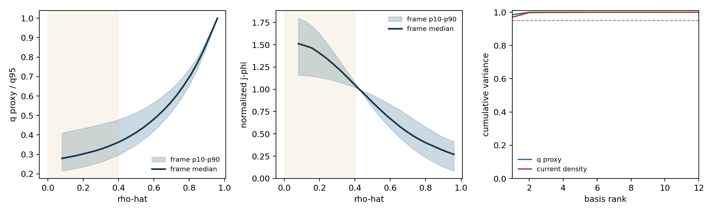
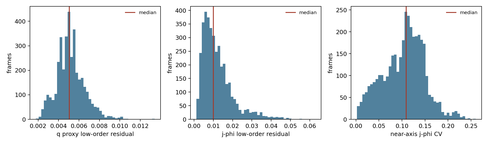

Verdict: inconclusive (85% confidence that these data do not identify pedigree). The profiles are smooth and low-dimensional, which is compatible with magnetics-only EFIT, but MSE-constrained EFIT using the same low-order basis and regularization can produce the same signatures. Recommend edge-weighted closure tuning: use boundary and outer-profile information strongly, retain only tightly priored low-degree interior corrections, and do not treat the core as independently verified.
Scope: 3,816 quality-selected frames from 4,141 banked frames across 20 shots (92.15%). The quality rule was finite q proxy and j profile; median surface separation R-squared >= 0.50.
| Discriminator | Measured number | Reading |
|---|---|---|
| q-profile interior structure | quadratic-in-rho-squared median residual 0.50%; median explained fraction 99.96% | Magnetics-only-like, not identifying |
| near-axis current detail | low-order median residual 1.01%; split-half residual coherence 0.958 | Coherent detail exists, but its source is ambiguous |
| interior basis stability | 95% ranks: q proxy 1, current 1; between-shot variance fractions 32.85% and 49.77% | Compact smooth ansatz |
| unconstrained-interior flatness | median core CV: current 10.93%, q proxy 7.83%; below 10% in 41.40% and 88.84% of frames | Flatness present to the measured degree, but not unique |


No bank or parquet field records whether MSE constraints entered the EFIT. The extracted current profile is derived from second derivatives of the same 65 by 65 psi map, so stable fine structure can be generated by the EFIT basis, smoothing, grid stencil, or extraction method. Conversely, a genuinely MSE-constrained solution may remain smooth because EFIT represents it with a low-order parametrization. Profile shape alone therefore has no constraint-specific signature in this corpus.
The q discriminator is weaker still: the corpus carries q95 but no q profile or F function. This report constructs q_proxy proportional to (dV/dpsi_N) times mean(1/R squared) divided by abs(delta psi), assumes constant F for its radial shape, and scales its edge to q95. It measures geometric complexity, not internal pitch independently.
edge-weighted. interior-trusted would convert non-identifying smoothness into unjustified provenance. boundary-only would discard real, coherent low-order information that is still useful under tight priors. The middle policy preserves that information without claiming MSE-grade core authority.
Any one of these would provide identifying evidence: reconstruction run metadata listing diagnostic constraints; EFIT input files or k-files exposing MSE weights; paired reconstructions of the same frames with MSE enabled and disabled; or a q-profile/pitch-angle residual receipt against held-out MSE measurements. Without one of them, the pedigree should remain explicitly unknown.
Machine-readable metrics: metrics.json. Reproduction log: run.log.